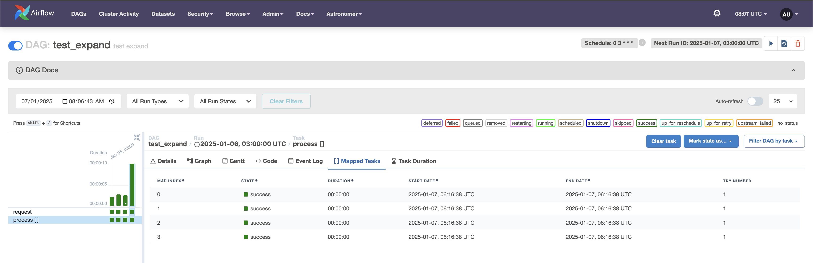
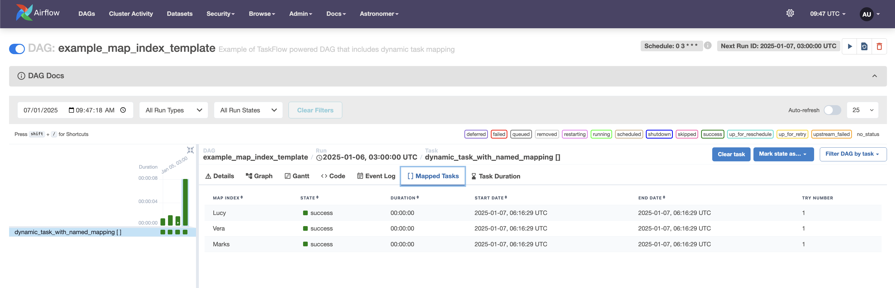

Dynamic tasks
DAG Factory supports Airflow’s Dynamic Task Mapping, enabling workflows to dynamically create tasks at runtime. This approach allows the number of tasks to be determined during execution, usually based on the outcome of a preceding task, rather than being predefined during DAG authoring.
Example: Defining Dynamic Tasks
Below is an example configuration for implementing dynamic tasks using DAG Factory:
test_expand:
default_args:
owner: "custom_owner"
start_date: 2 days
description: "test expand"
schedule_interval: "0 3 * * *"
default_view: "graph"
tasks:
process:
operator: airflow.operators.python_operator.PythonOperator
python_callable_name: consume_value
python_callable_file: $CONFIG_ROOT_DIR/expand_tasks.py
partial:
op_kwargs:
fixed_param: "test"
expand:
op_args:
request.output
dependencies: [request]
# This task is intentionally placed after the "process" task to demonstrate that DAG Factory does not require tasks
# to be topologically ordered in the YAML file according to their dependencies.
request:
operator: airflow.operators.python.PythonOperator
python_callable_name: make_list
python_callable_file: $CONFIG_ROOT_DIR/expand_tasks.py
Explanation of the Configuration
-
requestTask:- Generates a list of items using the
make_listfunction from the expand_tasks.py module. - This task serves as the input provider for the dynamically mapped tasks.
- Generates a list of items using the
-
processTask:- Dynamically generates one task for each item in the list produced by the
requesttask. - The expand argument is used to create these tasks at runtime, with
request.outputsupplying the input list. - Additionally, the
partialargument is used to specify fixed parameters (op_kwargs) that are applied to all dynamically generated tasks.
- Dynamically generates one task for each item in the list produced by the
How It Works
-
Dynamic Task Creation: The
expandkeyword allows the process task to spawn multiple tasks at runtime, each processing a single item from the list output of therequesttask. -
Fixed Parameters: The partial keyword ensures that common parameters, such as
fixed_param, are passed to every dynamically created task instance.
Benefits of Dynamic Task Mapping with DAG Factory
- Flexibility: Handle varying input sizes and conditions dynamically without modifying the DAG definition.
- Scalability: Efficiently process large datasets by leveraging Airflow’s parallel execution capabilities.
- Simplicity: Define dynamic workflows declaratively using YAML, minimizing boilerplate code.
Airflow mapped tasks view
Below, you can see a list of mapped tasks generated dynamically as part of the process task.

Advanced Dynamic Task Mapping with DAG Factory
Below, we explain the different methods for defining dynamic task mapping, illustrated by the provided example configuration.
example_taskflow:
default_args:
owner: "custom_owner"
start_date: 2 days
description: "Example of TaskFlow powered DAG that includes dynamic task mapping"
schedule_interval: "0 3 * * *"
default_view: "graph"
tasks:
some_number:
decorator: airflow.decorators.task
python_callable: sample.some_number
numbers_list:
decorator: airflow.decorators.task
python_callable_name: build_numbers_list
python_callable_file: $CONFIG_ROOT_DIR/sample.py
another_numbers_list:
decorator: airflow.decorators.task
python_callable: sample.build_numbers_list
double_number_from_arg:
decorator: airflow.decorators.task
python_callable: sample.double
number: 2
double_number_from_task:
decorator: airflow.decorators.task
python_callable: sample.double
number: +some_number # the prefix + leads to resolving this value as the task `some_number`, previously defined
double_number_with_dynamic_task_mapping_static:
decorator: airflow.decorators.task
python_callable: sample.double
expand:
number:
- 1
- 3
- 5
double_number_with_dynamic_task_mapping_taskflow:
decorator: airflow.decorators.task
python_callable: sample.double
expand:
number: +numbers_list # the prefix + tells DagFactory to resolve this value as the task `numbers_list`, previously defined
multiply_with_multiple_parameters:
decorator: airflow.decorators.task
python_callable: sample.multiply
expand:
a: +numbers_list # the prefix + tells DagFactory to resolve this value as the task `numbers_list`, previously defined
b: +another_numbers_list # the prefix + tells DagFactory to resolve this value as the task `another_numbers_list`, previously defined
double_number_with_dynamic_task_and_partial:
decorator: airflow.decorators.task
python_callable: sample.double_with_label
expand:
number: +numbers_list # the prefix + tells DagFactory to resolve this value as the task `numbers_list`, previously defined
partial:
label: True
The example above illustrates advanced usage of Dynamic Task Mapping using Dag Factory (the callable functions used in the example are kept in sample.py):
-
Static Input Mapping
The task
double_number_with_dynamic_task_mapping_staticshows how dynamic tasks can be created using static lists as input. Three tasks are created, each processing one number. -
Task-Generated Input Mapping
The task
double_number_with_dynamic_task_mapping_taskflowshows how tasks can use outputs from other tasks as input for dynamic task mapping. The prefix+tells DAG Factory to resolve this value as the tasknumbers_list, previously defined. -
Mapping with Multiple Inputs
The task
multiply_with_multiple_parametersshows how dynamic task mapping can combine outputs from multiple tasks as input parameters.
Named Mapping in Dynamic Tasks with DAG Factory
Starting with Airflow 2.9, the map_index_template feature allows for custom mapping name for dynamic tasks based on a
user-defined key. DAG Factory fully supports this feature, enabling users to name tasks dynamically in a meaningful way
during runtime. This can be useful for tracing and debugging tasks.
Below is an example of how to configure and use custom names for mapped tasks
# Requires Airflow 2.9 or higher
example_map_index_template:
default_args:
owner: "custom_owner"
start_date: 2 days
description: "Example of TaskFlow powered DAG that includes dynamic task mapping"
schedule_interval: "0 3 * * *"
default_view: "graph"
tasks:
dynamic_task_with_named_mapping:
decorator: airflow.decorators.task
python_callable: sample.extract_last_name
map_index_template: "{{ custom_mapping_key }}"
expand:
full_name:
- Lucy Black
- Vera Santos
- Marks Spencer
How it works
- map_index_template:
Customizes the naming of dynamically mapped tasks using a Jinja2 expression. In this example, it uses
custom_mapping_keyfrom the task context to define task names. - expand:
Dynamically generates tasks for each entry in the
full_namelist- Lucy Black
- Vera Santos
- Marks Spencer
- Dynamic Task Naming:
The
custom_mapping_keyis set to the first name of each person, e.g., Lucy, Vera, and Marks using the callable functionextract_last_name. This callable function is kept in sample.py
Airflow named mapped tasks view
The image below shows that the map_index gets the first name of the person in the mapped tasks with the above configuration.

Scope and limitations
The Airflow documentation on dynamic task mapping provides various examples of this feature. While the previous sections have discussed the forms supported by DAG Factory, it’s important to note the scenarios that have not been tested or are known to be unsupported.
The following cases are tested and expected to work (you can refer to previous sections on how to use them with DAG Factory):
- Simple mapping
- Task-generated mapping
- Repeated mapping
- Adding parameters that do not expand (partial)
- Mapping over multiple parameters
- Named mapping (map_index_template)
The following cases are untested but are expected to work:
- Mapping with non-TaskFlow operators
- Mapping over the result of classic operators
- Filtering items from a mapped task
The following cases are untested and may not work: